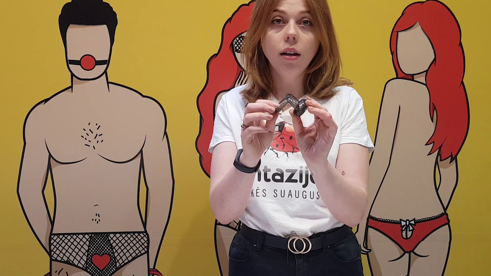
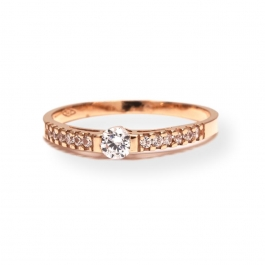

Žiedai
 8 657 79086 | info@jahont.lt Apie mus Atsiskaitymas Prekių pristatymas Mano paskyra Registruotis Prisijungti Pageidavimai (0) 0 prekė(s) - 0.00 €
Jūsų prekių krepšelis tuščias
Kategorijos Auksas Auskarai Pakabukai Žiedai Vestuviniai žiedai Apyrankės Grandinėlės Sagės Kūno papuošalai Peržiūrėti viską Auksas Sidabras Auskarai PANDORA karoliukai Pakabukai Žiedai Vestuviniai žiedai Apyrankės Grandinėlės Sagės Komplektai Gaminiai su aukso plokštelėmis Kūno papuošalai Krikštynoms, pirmam dantukui, suvenyrai Sidabriniai šaukšteliai Peržiūrėti viską Sidabras Dėžutės Valymo priemonės Išpardavimas Žiedai FiltravimasŽiedai
Prekių palyginimas (0) Rūšiuoti pagal: Standartinė Pavadinimas (A - Z) Pavadinimas (Z - A) Kaina (Žema Aukšta) Kaina (Aukšta Žema) Prekės kodas (A - Z) Prekės kodas (Z - A) Rodyti: 15 25 50 75 100 NaujienaSidabrinis žiedas su fianitais 170K01
METALAS: SidabrasPRABA: 925
INTARPAS: Fianitas
DYDIS: 17
SVORIS: 2.32 g
35.00 € Be PVM: 35.00 €
Į krepšelį NaujienaSidabrinis žiedas su granatu, hrizolitu, citrinu 18mm
METALAS: SidabrasPRABA: 925
INTARPAS: Mix
DYDIS: 18
SVORIS: 3.34 g
65.00 € Be PVM: 65.00 €
Į krepšelįSidabrinis žiedas su briliantu 166K01
METALAS: SidabrasPRABA: 925
INTARPAS: Briliantas
KARATAI: 0.008 ct
DYDIS: 17
SVORIS: 2.15 g
75.00 € Be PVM: 75.00 €
Į krepšelįSidabrinis žiedas su briliantu 166K02
METALAS: SidabrasPRABA: 925
INTARPAS: Briliantas
KARATAI: 0.008 ct
DYDIS: 17
SVORIS: 1.78 g
75.00 € Be PVM: 75.00 €
Į krepšelįSidabrinis žiedas su briliantu 166K03
METALAS: SidabrasPRABA: 925
INTARPAS: Briliantas
KARATAI: 0.008 ct
DYDIS: 16.5
SVORIS: 1.07 g
75.00 € Be PVM: 75.00 €
Į krepšelįSidabrinis žiedas su Emaliu ir fianitais 165K35
METALAS: SidabrasPRABA: 925
INTARPAS: Fianitas
DYDIS: 17.5
SVORIS: 2.43 g
27.00 € Be PVM: 27.00 €
Į krepšelįSidabrinis žiedas su Topazu ir fianitais 165K40
METALAS: SidabrasPRABA: 925
INTARPAS: Topazas
DYDIS: 18
SVORIS: 2.50 g
49.00 € Be PVM: 49.00 €
Į krepšelįSidabrinis žiedas su Kalnu Krištolu 165K49
METALAS: SidabrasPRABA: 925
INTARPAS: Kalnų krištolas
DYDIS: 19
SVORIS: 2,86 g
39.00 € Be PVM: 39.00 €
Į krepšelįSidabrinis žiedas su Topazu ir fianitais 165K36
METALAS: SidabrasPRABA: 925
INTARPAS: Topazas
DYDIS: 17.5
SVORIS: 2.16 g
45.00 € Be PVM: 45.00 €
Į krepšelįPaauksuotas sidabrinis žiedas su Gintaru 165K19
METALAS: Paauksuotas sidabrasPRABA: 925
INTARPAS: Gintaras
DYDIS: 17.5
SVORIS: 4.08 g
49.00 € Be PVM: 49.00 €
Į krepšelįPaauksuotas sidabrinis žiedas su Gintaru 165K51
METALAS: Paauksuotas sidabrasPRABA: 925
INTARPAS: Gintaras
DYDIS: 18
SVORIS: 2.67 g
39.00 € Be PVM: 39.00 €
Į krepšelįPaauksuotas sidabrinis žiedas 165K18
METALAS: Paauksuotas sidabrasPRABA: 925
INTARPAS: -
DYDIS: 17
SVORIS: 1.96 g
25.00 € Be PVM: 25.00 €
Į krepšelįPaauksuotas sidabrinis žiedas su Swarovski Zirconia 165K02
METALAS: Paauksuotas sidabrasPRABA: 925
INTARPAS: Swarovski Zirconia
DYDIS: 18.5
SVORIS: 2.41 g
35.00 € Be PVM: 35.00 €
Į krepšelįSidabrinis žiedas su Swarovski Zirconia 165K48
METALAS: SidabrasPRABA: 925
INTARPAS: Swarovski Zirconia
DYDIS: 19
SVORIS: 2.09 g
35.00 € Be PVM: 35.00 €
Į krepšelįSidabrinis žiedas su Swarovski Zirconia 165K01
METALAS: SidabrasPRABA: 925
INTARPAS: Swarovski Zirconia
DYDIS: 16.5
SVORIS: 2.19 g
35.00 € Be PVM: 35.00 €
Į krepšelį 1 2 3 4 5 6 7 8 9 | Rodoma nuo 1 iki 15 iš 380 (26 puslapių)Informacija
Apie mus Atsiskaitymas už prekes Prekių pristatymas Taisyklės Privatumo politika AKCIJOSAptarnavimas
Susisiekite su mumis Grąžinimo forma Svetainės žemėlapisPriedai
Prekių ženklai Dovanų kuponai Partnerystės programa Specialūs pasiūlymaiMano paskyra
Mano paskyra Užsakymų istorija Pageidavimų sąrašas Naujienų prenumerataJAHONT Jewelry © 2015 - 2020
